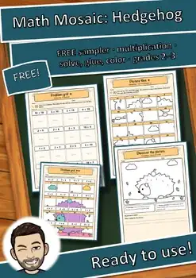
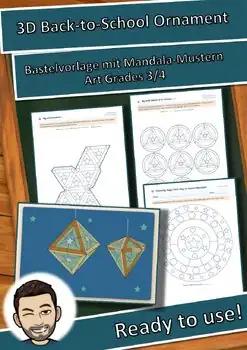
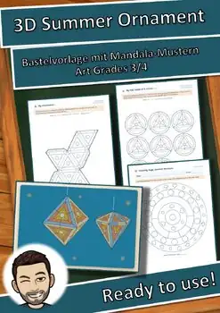
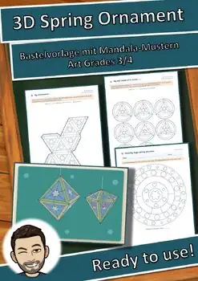
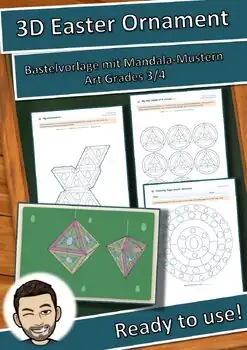
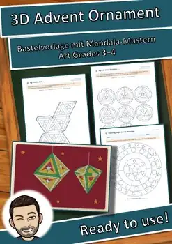
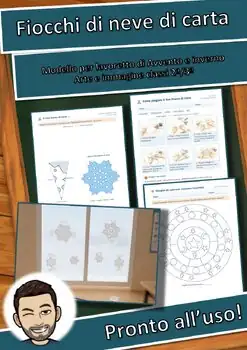

Saint Martin Window Lantern Craft Template | Fall Activity | Grades 3-4
Turn one sheet of paper into a glowing window lantern with a domed roof! Your students build, read, and solve, and the finished lanterns glow in warm colors for a Saint Martin's Day lantern parade or a cozy fall celebration.
HOW IT WORKS
Each student builds a square window lantern with a domed roof from a single template sheet. The windows are backed with tissue paper, so the lantern glows in warm colors when it is lit. A short reading text tells the legend of Saint Martin sharing his cloak, so the craft connects to reading, math, and art. Saint Martin's lantern parades are a tradition in Germany and other parts of Europe. This is a good chance for a short cultural connection in your classroom.
WHAT'S INCLUDED (13 pages + cover)
- Teacher notes with lesson flow (about 100 minutes), differentiation tips, copy plan, and standards connections
- Overview page with a sample image of the finished lanterns
- Step-by-step craft directions in 6 picture steps with an "I can" checklist
- 3 lantern templates (★ / ★★ / ★★★), each with base and glue tabs
- ★★★ blank template for students to design their own windows
- Reading passage "Saint Martin Shares" with 3 tasks: true/false, answer the questions, write your own sentences
- Color-by-solution pages in 3 levels (within 20, within 100, multiplication facts) for early finishers
- Lantern mandala coloring page with a counting task
- Answer key
THREE LEVELS OF DIFFERENTIATION
★ One large arched window on each side, with a thick cutting line. Great for students who need extra support with scissors.
★★ Windows with a window cross (four panes per side). Good for most students in the class.
★★★ Motif windows (star, moon, heart, and lantern) or students design their own windows on the blank template. Ideal for students who want a challenge.
LEARNING GOALS
Students will...
- plan, cut, fold, and assemble a three-dimensional paper lantern by following sequenced directions
- make artistic choices about color, shape, and window design
- identify and describe shapes and solid forms (squares, rectangles, arches, dome) in their own work
- read a short legend, recall key details, and answer questions about it
- practice addition, subtraction, and multiplication facts through color-by-solution pages
STANDARDS CONNECTIONS
- National Core Arts Standards: VA:Cr1 (generating ideas), VA:Cr2 (developing and organizing work), VA:Pr5 (preparing work for presentation)
- Common Core Math: 3.G and 4.G (geometry), 3.OA and 4.OA (operations and alg
Similar resources

Math Mosaic FREE Sampler | Multiplication Color Puzzle | Grades 2-3

Advent House Town: Paper Advent Calendar Craft & Activities, Grades 3-4

3D Back-to-School Ornament Craft Template, Geometry Activity, Grades 3-4

3D Summer Ornament Craft Activity | Paper Shapes Template | Grades 3-4

3D Spring Ornament Craft: Mandala Geometry Activity Template, Grades 3-4

3D Easter Ornament Craft Activity | Mandala Geometry Shapes | Grades 3-4

3D Advent Ornament Craft Template | Winter Geometry Activity | Grades 3-4
